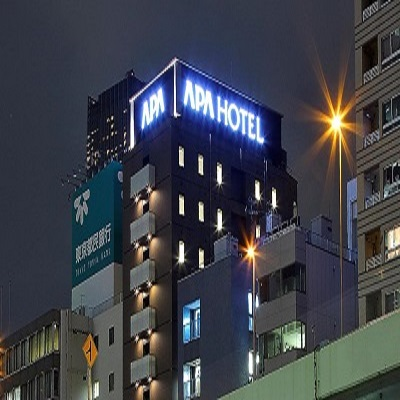
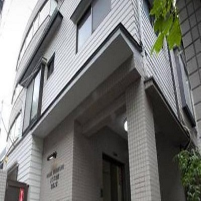

Affordable Hotel Choices
Only The Best For Your Tokyo Experience
Book a Room in Ueno
At 1980 Yen a day, this hotel is a great, cheap price for staying in Tokyo. Located about five minutes from Ueno Station, this allows the guests to traverse Tokyo easily and quickly.

Book a Room in Roppongi
At Hotel Villa Fontaine Grand this is a luxury hotel but close to the station to allow you to access all of Tokyo easily.
Book a Room in Akihabara
For those of you who love electronics, games, anime, and manga, all that good nerdy stuff, this hotel is for you. Even if you aren't into that stuff, the station is within quick access and is close to other areas of the city.

Book a Room in Ikebukuro
Located in the lovely area of Ikebukuro, Dormy Hotels enjoys a commanding position in the shopping, nightlife, restaurants hub of Tokyo. From here, guests can enjoy easy access to all that the lively city has to offer.